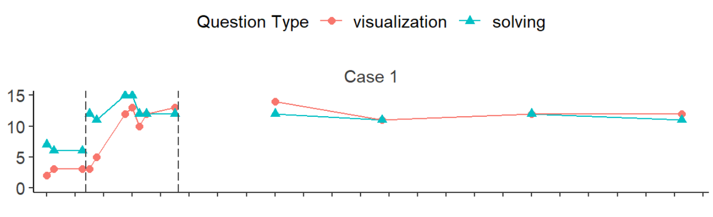

Case study: Technology-assisted instruction for math
Visual analysis results as functional relation
Multilevel modeling results
Visual Analysis in single-case design
A single-case design focuses on individual or group performance and demonstrates causal relationships between variables through experimental control (Kazdin, 2019).
Behavior changes are evaluated through visual analysis of graphical data, examining changes in level, trend, and variability across phases.
Interventions are provided to individual students (N=1) or small groups.
Code
AB <-read_csv("data/ABAB.csv", show_col_types =FALSE)AB$Case <-paste0("Student ", AB$Case, sep ="")AB.plot <- AB %>%ggplot(aes(Session, Outcome)) +geom_line(data =subset(AB, AB$Phase =="Baseline1"), aes(linetype='1'), linewidth =0.5) +geom_line(data =subset(AB, AB$Phase =="Baseline1.Predict"), aes(linetype='2'), linewidth =0.5) +geom_line(data =subset(AB, AB$Phase =="Intervention1"), aes(linetype='1'), linewidth =0.5) +geom_line(data =subset(AB, AB$Phase =="Intervention1.Predict"), aes(linetype='2'), linewidth =0.5) +geom_line(data =subset(AB, AB$Phase =="Baseline2"), aes(linetype='1'), linewidth =0.5) +geom_line(data =subset(AB, AB$Phase =="Intervention2"), aes(linetype='1'), linewidth =0.5) +geom_point(size =2.5) +theme_minimal(base_size =13) +theme(plot.title =element_text(face ="bold", size =15),legend.position ="top",panel.grid.major =element_line(colour ="grey95", linewidth =0.2),panel.grid.minor =element_blank(),legend.text =element_text(size =13),legend.title =element_text(size =13, hjust =0.5),strip.text.x =element_text(color ="#3B3B3B", size =13),axis.text.x =element_text(size =13, color ="#3B3B3B"),axis.text.y =element_text(size =13, color ="#3B3B3B"),axis.title =element_text(face ="bold", size =13, color ="#3B3B3B") ) +labs(x ="Session",y ="Correct Percentage (%)" ) +guides(linetype="none") +geom_vline(aes(xintercept =3.5), linetype ="longdash", linewidth =0.3, color ="grey10") +geom_vline(aes(xintercept =8.5), linetype ="longdash", linewidth =0.3, color ="grey10") +geom_vline(aes(xintercept =12.5), linetype ="longdash", linewidth =0.3, color ="grey10") +annotate(geom ="text", x =2, y =95, label ="Baseline", color ="#0000FF", fontface ='bold', size =5.5) +annotate(geom ="text", x =6, y =95, label ="Intervention", color ="#0000FF", fontface ='bold', size =5.5) +annotate(geom ="text", x =10.5, y =95, label ="Baseline", color ="#0000FF", fontface ='bold', size =5.5) +annotate(geom ="text", x =15, y =95, label ="Intervention", color ="#0000FF", fontface ='bold', size =5.5) +annotate(geom ="text", x =6, y =25, label ="Prediction", color ='red', fontface ='bold', size =5.5) +annotate(geom ="text", x =10.5, y =5, label ="Verification", color ='red', fontface ='bold', size =5.5) +annotate(geom ="text", x =15, y =75, label ="Replication", color ='red', fontface ='bold', size =5.5) +annotate("rect", xmin =3.8, xmax =8.3, ymin =0, ymax =20, alpha = .2) +annotate("rect", xmin =8.8, xmax =12.3, ymin =60, ymax =90, alpha = .2) AB_plot <- AB.plot %>%ggplotly(height =350) %>%layout(dragmode ="select")
Internal validity is established through baseline logic involving three elements: (a) prediction (what behavior would look like without intervention), (b) verification (demonstrating baseline would continue unchanged), and (c) replication (demonstrating effects multiple times).
Multilevel Modeling for Single-Case Data
Individual behavior is repeatedly measured over time.
Behavioral changes between time periods are measured using a piecewise growth model.
Observations at time t are related to observations at previous time points (autocorrelation coefficient).
Unlike longitudinal studies such as panel surveys, data are measured intensively and frequently.
In repeated measurements, correlation coefficients between nearby time points are higher than those between distant time points.
Shin, M., Hart, S. L., & Simmons, M. (2024). Meta-analysis of single-case design research: Application of multilevel modeling. School Psychology, 39(6), 625-635. https://doi.org/10.1037/spq0000637
Piecewise Regression Models

Distinct behavioral variations usually occur when experimental conditions (e.g., the provision or the withdrawal of interventions) change over time (Ledford & Gast, 2018).
To accurately model this discontinuity between phases (i.e., changes in levels and trends), researchers can employ a piecewise regression model approach.
After providing intervention, students’ performance levels are expected to change immediately, and behaviors are expected to increase or decrease in the targeted direction during the intervention phase (Center et al, 1985)
Case Study on Technology-Assisted Instruction (TAI) for Math
What are the effects of TAI with teacher prompts on visualizing and solving fraction multiplication word problems in middle school students with learning disabilities?
What are the moderating effects of word problem question types (visualization vs. problem-solving) on changes between adjacent phases?
Shin, M., & Park, J. (2024). Technology-assisted instruction with teacher prompts on fraction multiplication word problems: A single-case design with visual analysis and Bayesian multilevel modeling. Assistive Technology. Advance online publication. https://doi.org/10.1080/10400435.2024.2415366
Method
Four middle school students with mathematics learning disabilities
Middle school in the Southeastern United States
Resource math class (50 minutes of daily math instruction)
One-on-one intervention by a special education teacher
Inclusion criteria: Students in grades 6-8, mathematics achievement (state test), below school level, with individualized math program goals, and screening test scores below 30%
Multiple-probe design across subjects with three phases: baseline, intervention, and maintenance
\(\text{sign}(x)\) = +1 if \(x > 0\), -1 if \(x < 0\), and 0 if \(x = 0\) \(n_A\) = number of baseline observations \(n_B\) = number of intervention observations \(n_M\) = number of maintenance observations \(\tau \in [-1, 1]\): positive values indicate improvement or sustained gains
Improvements in both visualization and word problem solving questions compared to baseline.
Visualization:
A vs. B Tau = 0.76 ~ 1.00,
B vs. M Tau = -0.29 ~ 0.33
Word Problem Solving:
A vs. B Tau = 1.00,
B vs. M Tau = -0.71 ~ 0.10
Bayesian Multilevel Modeling
Cumulative Link Mixed Effects: Analyzed 6-point ordinal scale data for each item (Level 1) nested within repeated measurement days (Level 2) for each student (Level 3).
Bayesian approach is recommended to avoid convergence issues that arise from excessive zeros in baseline phases (Li et al., 2024).
By incorporating prior information, researchers can fit models that avoid extreme values (e.g., random effect variances close to zero) with small sample sizes (Meteyard & Davies, 2020).
Although the small number of participants limits the generalizability of the findings, single-case design research is often aimed at understanding and refining interventions on an individual level, making it particularly useful in situations where large-scale trials may not be feasible or necessary.